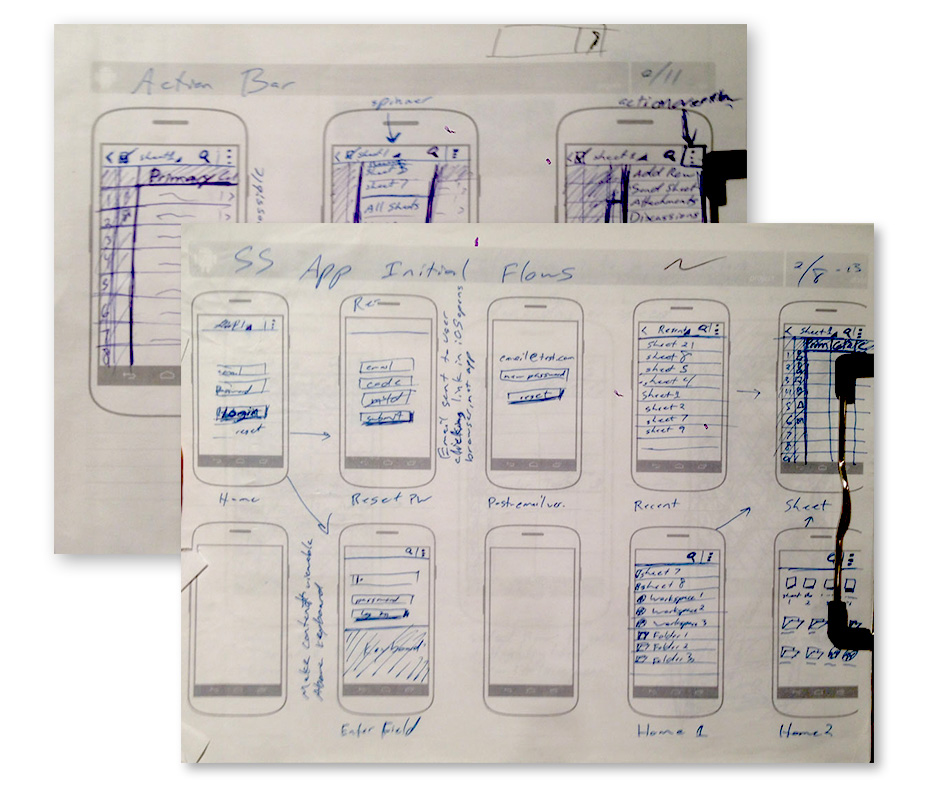
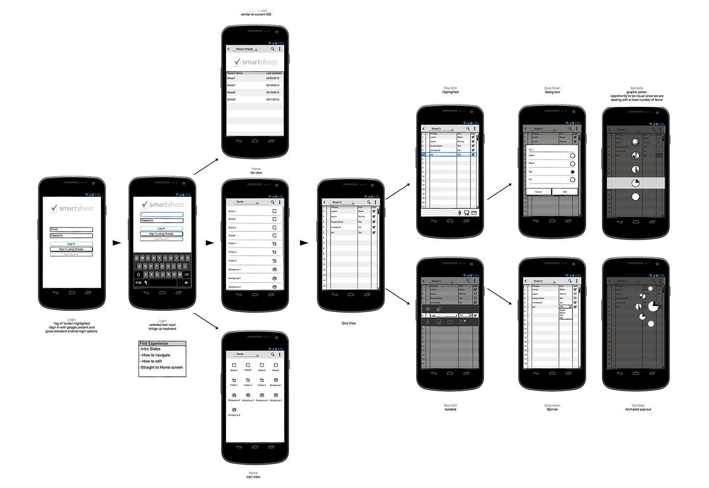
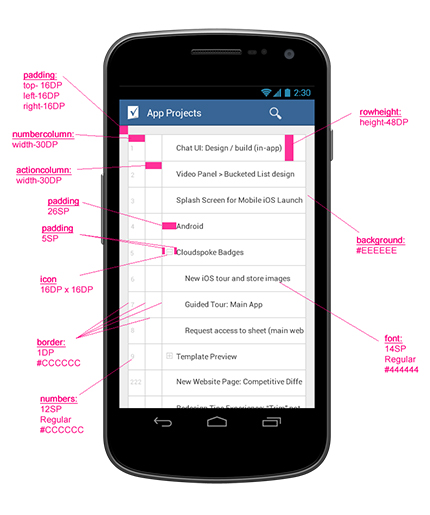
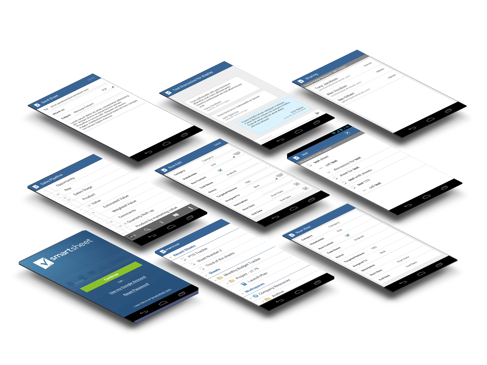

Smartsheet
It’s been a while since this app was released but still something I’m proud of. Smartsheet was in need of an android app to parody features from their existing iOS app. After initial designs were put out, the decision was made to launch features not in the iOS app. Android was the perfect testbed for mobile features before adding them to iOS which we predicted would have a much larger install base than our yet to be released Android app.
For this project, we kept it simple with a line graph comparing total trips to the six flags locations and their quarterly earnings. Our initial impressions were good but given covid, data may not have been completely accurate. The next quarter would be the real test as it was after a lot of lockdown restrictions were lifted and businesses were getting back to normal. When the earnings report happened, we were within 5 percent of what we had predicted based on traffic alone. Being able to show year over year traffic trends mirroring earnings was huge.
Mobile design is a fun change of pace from designing desktop software. The limitations from screen size and interaction method are fun challenges, especially when designing for a product like smartsheet. Spreadsheets are notoriously not mobile friendly.
I was the sole designer on this project. I worked closely with the mobile developer and the testing team. There were quite a bit of changes to the basic design. This was one of the first projects I worked on that had a lot of C level people interested. With that much scrutiny from people at the top of an organization, it’s important to keep it together and say no sometimes, even if it’s scary. CEOs don’t always know what’s best, that’s why they hire us! Of course, if they are bothered by something, it’s also important to take their feedback and give it an honest assessment. They wouldn’t be in their position if they didn’t know what they were doing at least a little.
Ultimately, our android app ended up following a lot of the standard google style guidelines from the time. I did create custom iconography and assets to use on what was, at the time, a platform capable of higher resolutions. Android also introduced 9-slicing and unique methods to scale content for different screen sizes. It was a project that I learned a lot from and knowledge that has helped me for years.
Started with sketches
Simple wireframes with user flow
Hand off ready designs for the dev team
Mockup for the play store and marketing campaigns